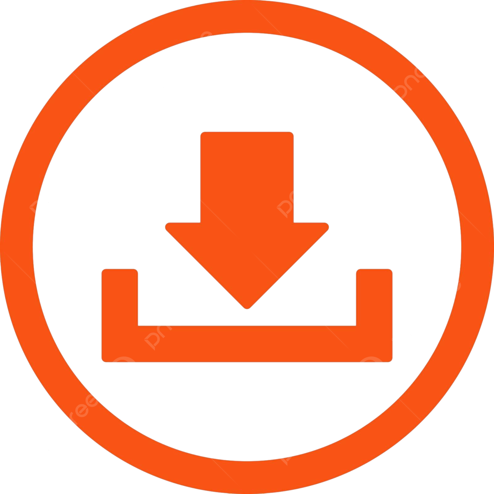

J.A's Company
Murais Digitais e Tablet's Educacionais
A J.A's Company
Quem somos?
A J.A's Company, localizada em Irati, no Paraná, é uma empresa de técnologia atual direcionada, principalmente, à émpresas e indústri-
as que utilizam a tecnologia e, institutos e escolas que possuem alunos com algum tipo de deficiência e/ou uma organização completa.
Logo, muito em breve, faremos o lançamento dos nosos produtos. São eles, o Mural Digital, possuindo sua tamanha inovadora técno-
lógia, e o Tablet, para uso pessoal ou coletivo. Nossa ideia foi implementar algo inovador para que os alunos com deficiência moto-
ra, deficiência auditiva, deficiência visual, entre outros, conseguissem se integrar mais ao ambiente escolar através do uso pessoal do
Tablet ou do uso coletivo, em sala, do nosso incrível Mural Digital.
Trajetória dos Sócios da J.A's Company
A nossa empresa J.A's Company, foi desenvolvida por três antigos estudantes técnicos formados pelo Instituto Federal do Paraná.
Ana Livia Lazzari, nossa Genrente de Vendas e Gerente Administrativa, juntamente com Ana Luiza Bubniak, nossa Assistente Social e
Gerente de Marketing, e João Vinicus Zuaretch, nosso Gerente de Fiscalização e Analista Pleno, desenvolveram a empresa
J.A's Company através de todos seus conhecimentos na área de informática, durante sua trajetótia escolar no Instituto Federal do
Paraná. Para saber mais sobre o local de formação desses excelentes profissionais, clique no link ou na página abaixo!
IFPR - Campus Irati
Planejamento do início
Durante nossa trajetória no Instituto Federal do Paraná, foi perceptível as dificuldades de alunos especiais para se integrar ao
aprendizado e à organização aos estudos. Então, nosso pensamento inicial era criar algo para que os alunos com deficiência
motora, deficiência auditiva, deficiência visual, entre outros, consegiuissem se integrar mais ao ambiente escolar através do
uso pessoal do Tablet ou uso coletivo, em sala, do Mural Digital. Porém, ao longo dos anos fomos percebendo que o uso dos
aparelhos poderiam ser inseridos em ambientes de trabalho também. Como por exemplo, escritórios, salas de empresas, cons-
truções civil, indústrias, locais para o uso coletivo e também para organização estudantil ou empresarial de um só usuário.
Para saber melhor obre nossa equipe, nossos pensamentos, logísticas, riscos, integrações, nossas ideias de inclusão social e
desenvolvimento que foram registrados no início da empresa, visualize melhor clicando no link abaixo:
Mural Digital
O Mural Digital é um dos Aparelhos Educacionais, de tamanha técnologia, que temos em produção hoje, em nossa empresa.
O nosso Mural Digital é uma ferramenta de comunicação interna onde telas expostas aos colaboradores são instaladas em lugares
estratégicos dentro da empresa, como em áreas de convivência, refeitórios, escritórios e, como em nosso pensamento inicial, em
áreas escolares. Este produto possui diferenciais em relação aos demais, como alcance, atratividade e acessibilidade da informação.
Confira no link da página abaixo, exemplos de 15 empresas e corporações que possuem murais digitais em seus escritórios hoje:
Empresas e CorporaçõesTablet Tecnológico
O Tablet é outro dos Aparelhos Educacionais que temos em produção em nossa empresa.
O Tablet, hoje, está entre as melhores opções de praticidade para trabalhar, desde em escritórios, até em casa. E, principalmente,
nas instituições e escolas. hoje em dia, a técnologia está muito interligada aos estudos, e principalmente, sua organização.
Venda e valor
A J.A's Company ainda nao abriu as vendas dos nossos Murais Digitais e Tablets Educacionais, pois ainda estamos terminando os
testes e avaliações dos nossos aparelhos. Porém, muito em breve, iremos realizar o lançamento deles. Já estamos na etapa final!
Para a curiosidade de muitos, deixaremos um spoiler do valor, em média, que irá custar nossos produtos e também, a programação.
Conforme a tabela abaixo, segue a médias de nossos produtos após serem lançados:
| Produto | Valor (em média) |
|---|---|
| Mural Digital | ~R$10.000,00 |
| Tablet Educacional | ~R$1.500,00 |
| Programação | ~R$5.000,00 |
Sobre nós

Email da J.A's Company
Endereço J.A's Company
Analista Pleno
Assistente Social
Gerente de Vendas
Gerente Administrativa
Gerente de Marketing
Gerente de Fiscalização
Fale Conosco
Deseja tratar de algum assunto em específico ou dar sugestões? Clique aqui!
Download

Deseja fazer download do Site da Empresa J'As Company? Fazer download!
J.A's Company em parceria com a SoundCloud